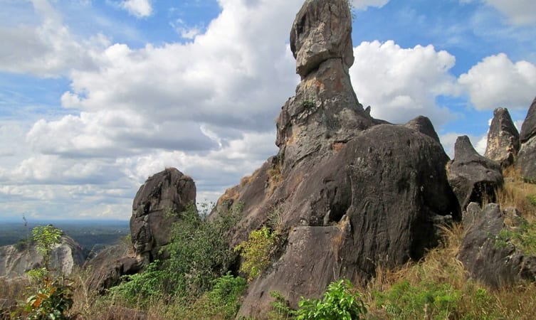

1. Edakkal Caves

2.Kuruva Island

3. Chembra Peak

4. Banasura Sagar Dam

5. Pookode Lake

6. Neelimala View Point

7. Meenmutty Waterfalls

8. Tholpetty Wildlife Sanctuary

9. Bamboo Forests

10. Phantom Rock


Adorning the northern hills of Kerala is the beautiful district of Wayanad, maintained by the District Tourism Promotion Council, Wayanad. This area is famous for its large amount of camping and trekking trails, breathtaking waterfalls, caves, bird-watching sites, flora, fauna and an overall plethora of magnificent sights. This area has been a tourist favourite over the years. People are especially delighted by the range of exotic products including spices, coffee, tea, bamboo products, honey and herbal plants available here.
Kanthanpara Waterfalls is one hotspot in Wayanad that allures tourists from all over the world. Apart from these magnificent falls, Wayanad calls you to experience the stunning beauty of Karapuzha Dam, Pookode & Karlad Lake as well. If you are an adventure seeker, then Cheengari Rock Adventure Center is a must-visit place for you. Another must-visit place in Wayanad is the Edakkal Caves. The caves are two natural rock formations believed to have been formed by a large split in a huge rock. The carvings inside are extremely beautiful.
Tourist Information Offices:
DTPC Wayanad,
Civil Station,
North Kalpetta,
Wayanad
Phone: + 91 4936 202134
Mail: info@dtpcwayanad.com
Website: wayanadtourism.org
Getting there
Nearest railway station: Calicut Railway Station is 62 km away
Nearest airport: Calicut International Airport, about 65 km | Kannur International Airport, about 95 km